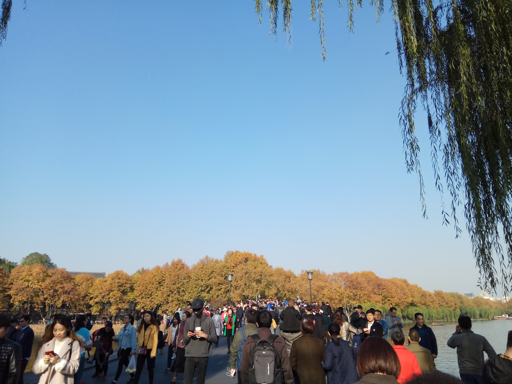

Welcome to my page! My name is Zhiqing Hong and I am a third-year master student majoring in computer science in Zhejiang University, China.
My research interests lie in the broad field of machine learning and data mining.
I have experience in medical data analysis using machine learning, and 3-D image classification with convolution neural network. I am always excited to change ideas
and communicate with others!
Please check out my CV for details!